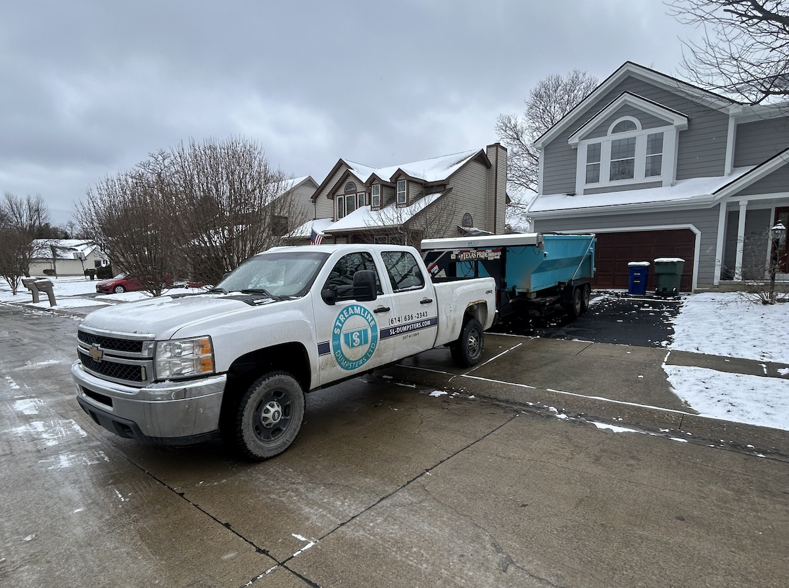

Flip Houses? Here's Your Dumpster Rental Strategy
First-time flippers almost always underestimate debris volume. Experienced flippers plan for it from day one. Here's how to think through dumpster rental for any flip scope—cosmetic touch-up to full gut rehab—so waste removal never slows down your project or surprises your budget.

A guy from Hilliard called me last spring on his first flip. He'd bought a dated ranch—original kitchen, original bathrooms, carpet over hardwood, popcorn ceilings throughout. His contractor had started demo two days earlier.
"I need a dumpster delivered today," he said. "Like, right now."
I asked what was going on.
"My contractor has a pile of demo debris sitting in the garage and nowhere to put it. He's threatening to slow down until we have somewhere to throw the stuff."
He hadn't planned for a dumpster at all. He figured the contractor would handle it. The contractor figured the owner would handle it. Meanwhile, a two-day project delay was burning carrying costs on a $240,000 property.
I got him a dumpster that afternoon. But it's a situation that didn't need to happen—and it almost always happens to first-time flippers.
Waste removal isn't glamorous. It doesn't show up in the before-and-after photos. But if you're not planning for it from the moment you buy a property, it will find a way to cost you.
The First Thing Experienced Flippers Get Right
Ask a seasoned investor what they budget for waste removal on a flip and they'll give you a number without hesitating. They've been burned before—or they learned from someone who was. They know that demo debris doesn't disappear on its own, that contractors aren't debris removal services, and that a dumpster sitting in the driveway on day one is cheaper than the alternative.
First-time flippers tend to think about dumpsters the way they think about a lot of project logistics: they'll figure it out when they get there. The problem is that "getting there" means demo has already started, debris is piling up, and your contractor is either slowing down or hauling loads to the dump on your dime and time.
The fix is simple: know your flip type, know what that scope generates in debris, and book accordingly.
Know Your Flip Type
Not every flip needs the same approach to waste removal. The scope of your project directly determines how many dumpsters you'll need, when to schedule them, and what to budget. There are three basic categories.
The Cosmetic Flip
What it is: Paint, new flooring, updated fixtures, fresh landscaping, maybe new kitchen hardware or a bathroom vanity swap. The bones of the house are fine—you're refreshing the surface.
What it generates: Old carpet and padding, paint supplies and packaging, removed fixtures, maybe a vanity or toilet, yard debris from cleanup and landscaping. Light, manageable volume.
What you need: In most cases, one 14-yard dumpster handles a cosmetic flip comfortably. Book it for the start of the project, fill it as work progresses, and schedule pickup when you're done.
Timing: Book for the first day of work. Even if demo is light, having a dumpster on-site from day one means debris has a home immediately. Your crew isn't making decisions about where to put things.
Budget: One rental at $344.52. Simple.
The Mid-Level Rehab
What it is: Full kitchen and bathroom remodels, new flooring throughout, HVAC replacement, new windows, updated electrical. Significant demo, significant new materials going in, significant old materials coming out.
What it generates: Cabinet boxes, countertops, tile, old appliances, drywall, subfloor sections, old windows and frames, HVAC equipment, packaging from all the new materials. Volume adds up fast.
What you need: Plan for two to three dumpster rentals across the project timeline. One dumpster won't carry a full kitchen and bath demo plus the packaging debris from new installations.
Timing: First dumpster on demo day. When it fills—typically within a few days of active demo—swap it out. A third rental near the end of the project handles the cleanup debris: packaging, scraps, and whatever accumulated in corners during construction.
Budget: Two to three rentals, roughly $645 to $970. Factor this into your budget from the start. It's a real line item, not an afterthought.
The Gut Rehab
What it is: Everything goes. Down to studs, new everything—plumbing, electrical, HVAC, insulation, drywall, flooring, kitchen, baths, windows, doors. A complete transformation.
What it generates: The entire interior of a house. Old drywall, insulation, framing pieces, every fixture, every cabinet, every piece of flooring, old plumbing and electrical materials, appliances, doors, windows. A gut rehab on a 1,500-square-foot house generates far more debris than most first-time flippers anticipate.
What you need: Budget for three to five rentals, sometimes more depending on house size. A gut rehab is a sustained debris operation. You'll fill and swap dumpsters throughout the demo phase, generate more during rough-in work, and need another for the final cleanout before listing.
Timing: Have the first dumpster there before demo starts. Gut rehab moves fast once a crew is in—they can fill a 14-yard dumpster in a day or two. Call as each one fills so we can turn around a fresh one quickly. Don't let a full dumpster become the bottleneck that stalls your crew.
Budget: Three to five rentals minimum, $970 to $1,615+. On a gut rehab, waste removal is a legitimate project cost that belongs in your numbers from day one.
Flip Type at a Glance
| Flip Type | Typical Rentals | Budget Range | When to Book First |
|---|---|---|---|
| Cosmetic | 1 | ~$323 | Day 1 of work |
| Mid-Level Rehab | 2–3 | $645–$970 | Demo day |
| Gut Rehab | 3–5+ | $970–$1,615+ | Before demo starts |
Build It Into Your Budget From the Start
The mistake most first-time flippers make isn't failing to rent a dumpster—it's failing to budget for waste removal at all until they're standing in the middle of a demo with nowhere to put anything.
Experienced investors treat waste removal like any other line item: labor, materials, permits, carrying costs, waste removal. They know the number before they close on the property, and it's factored into their maximum allowable offer.
The math is straightforward. Look at your scope, find your flip type above, and use the budget range as your baseline. If you're doing a cosmetic flip in Dublin, that's $323 to budget. If you're gut-rehabbing a ranch in Worthington, budget $1,000–$1,500 for waste removal and don't be surprised if you end up on the higher end.
What you don't want to do is treat waste removal as discretionary or assume your contractor will absorb it. They won't—and if they are hauling debris for you, they're charging for it somewhere in their labor rate. Better to know the cost explicitly and control it yourself.
Waste Removal Budget Rule of Thumb
Cosmetic flip: 1 rental — budget $345
Mid-level rehab: 2–3 rentals — budget $689–$1,034
Gut rehab: 3–5+ rentals — budget $1,034–$1,723+
Each rental: $319 + 8% Ohio tax = $344.52 total. Includes delivery, 3 days, 4,000 lbs, pickup, and driveway protection boards. Extensions: $15/day.
Timing: Have the Dumpster There Before You Need It
The single most common mistake—the one that created the Hilliard situation I described at the start—is booking the dumpster reactively instead of proactively.
Your demo crew doesn't wait. The moment they start pulling cabinets, ripping up flooring, or tearing out drywall, debris starts accumulating. If there's no dumpster on-site, that debris has to go somewhere: the garage, the front yard, a pile in the backyard. Now your crew is navigating around debris instead of working through the house, and you've turned a clean demo process into a double-handling problem.
The rule is simple: book the first dumpster for the day demo starts, or the day before.
We offer same-day delivery throughout the Columbus area when you book before 2 PM—so even if your timeline shifts at the last minute, you're not stuck. But for a flip, don't rely on last-minute. Know your demo start date, book a few days ahead, and have the dumpster waiting when your crew pulls up.
A Note on Contractor Coordination
One conversation worth having with your GC before demo starts: who's responsible for managing the dumpster? Who calls when it's full? On most flips, the owner handles the booking and communicates directly with me. The contractor knows the dumpster is there, uses it, and tells the owner when it's getting full.
What creates problems is when neither the owner nor the contractor feels responsible for it—and a full dumpster sits blocking workflow for two days while everyone assumes someone else is going to call. Designate one person as the point of contact for waste removal before demo begins.
The Multi-Pull: Managing Swaps Through the Project
On a mid-level or gut rehab, you're running a series of pulls—pickup of a full dumpster and delivery of a fresh one as the project progresses. This is simpler than it sounds: when a dumpster is full, you call me, I pick it up and deliver an empty one.
One thing experienced flippers learn quickly: don't wait until a dumpster is completely full before calling for a swap. Call when it's about three-quarters full and schedule the next delivery a day or two out. That gives you a buffer. The worst position is an overflowing dumpster on a Friday afternoon when your crew is pushing to hit a milestone before the weekend.
What Goes In (and What Doesn't)
For most flip debris, you won't have to think twice. Standard renovation materials go right in:
- Drywall, lumber, framing, and subfloor sections
- Cabinets, countertops, vanities, and trim
- Flooring of all types—carpet, hardwood, vinyl, tile
- Old windows, doors, and frames
- Fixtures: sinks, toilets, tubs, showers
- Appliances: stoves, dishwashers, washers, dryers, water heaters
- Roofing shingles and materials
- Packaging and boxes from new materials
- Insulation, fencing, deck boards, and exterior materials
A few things that can't go in—and that flippers occasionally run into:
- Liquid paint and solvents — Dried paint cans are fine; liquid paint is not
- Refrigerators and freezers — Anything with refrigerant requires freon removal first
- Hazardous chemicals — Old pesticides, solvents, or pool chemicals left behind by previous owners
- Batteries and tires
- Asbestos-containing materials — Older homes may have asbestos in floor tiles, insulation wrap, or drywall compound; requires professional abatement and specialized disposal
That last point is worth flagging specifically for flippers working on older properties. A home built before 1980 has a reasonable chance of containing asbestos somewhere. If you're doing a gut rehab on a 1960s or 1970s ranch, get an asbestos inspection before demo starts. Finding out after demo is underway is a much bigger problem than finding out before.
Working Together Across Multiple Flips
If you're flipping houses in the Columbus area on a regular basis, you're not a one-time customer—and I don't treat you like one.
The pricing is the same flat rate for everyone: $344.52 per rental. But repeat customers get something more valuable: priority scheduling. When you call, you get fast turnarounds, flexible pickup scheduling, and a person who understands how a flip operates and what you need from a waste removal partner.
I've worked with investors running two or three flips simultaneously across Dublin, Powell, and Upper Arlington. When you need dumpsters coordinated across multiple active projects, it helps to work with someone who knows your operation. One call, multiple properties, no confusion about which dumpster is going where.
If you're building a consistent flipping business in Central Ohio, build consistent vendor relationships to go with it. Waste removal shouldn't be something you're scrambling to figure out on every project.
The Bottom Line for Flippers
That first-time flipper in Hilliard—the one who called me in a panic with a pile of debris and no dumpster—ended up having a successful flip. He just paid a two-day delay tax he didn't need to pay.
He called me on his second flip before he even closed on the property. "I'm buying a mid-level rehab in Worthington," he said. "Walk me through what I should budget for waste removal."
That's the shift experienced flippers make. From "we'll figure it out" to "let's plan for it." On a flip where carrying costs are running every day, a two-day delay from a missing dumpster is real money. A $650 waste removal budget that prevents that problem is one of the best returns on your project.
Flipper Quick Reference
- Book the first dumpster before demo starts — don't wait until debris is piling up
- Know your flip type — cosmetic (1 rental), mid-level (2–3), gut rehab (3–5+)
- Budget waste removal as a line item — it belongs in your numbers from day one
- Call for a swap at 75% full — don't wait for overflow to schedule the next pull
- Designate a point of contact — you or your GC, settled before demo day
- Gut rehab on an older home? — Get an asbestos inspection before demo starts
- Same-day delivery available — book before 2 PM for delivery that day
Ready to Plan Your Next Flip?
Call me and describe your project—I'll tell you exactly how many dumpsters to budget for, when to schedule them, and how to coordinate pickups and drops as the work progresses. This conversation takes five minutes and saves you the headache of figuring it out while your contractor is standing in a pile of debris.
14-yard dumpster: $319 + tax = $344.52 total. Includes delivery, 3 days, 4,000 lbs, pickup, and driveway protection. Extensions at $15/day. Same-day delivery when you book before 2 PM.
- Call to plan your project: (614) 636-2343
- Book online: Quick online booking available 24/7
- Same-day delivery: Book before 2 PM for delivery today
Serving Dublin, Hilliard, Powell, Upper Arlington, Worthington, Plain City, and the greater Columbus area. One company, consistent service, and someone who understands how a flip actually runs.